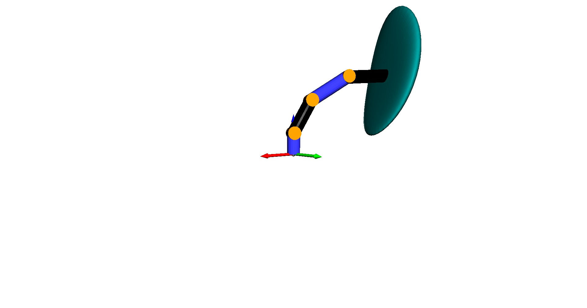

Note
Click here to download the full example code
Probabilistic Product of Exponentials¶
We compute the probabilistic forward kinematics of a robot with flexible links or joints and visualize the projected equiprobably ellipsoid of the end-effector’s pose distribution.
The end-effector’s pose distribution is computed based on the probabilistic product of exponentials (PPOE):
Meyer, Strobl, Triebel: The Probabilistic Robot Kinematics Model and its Application to Sensor Fusion, https://elib.dlr.de/191928/1/202212_ELIB_PAPER_VERSION_with_copyright.pdf
import os
import numpy as np
from matplotlib import cbook
import open3d as o3d
from pytransform3d.urdf import UrdfTransformManager
import pytransform3d.transformations as pt
import pytransform3d.trajectories as ptr
import pytransform3d.uncertainty as pu
import pytransform3d.visualizer as pv
class ProbabilisticRobotKinematics(UrdfTransformManager):
"""Probabilistic robot kinematics.
Parameters
----------
robot_urdf : str
URDF description of robot
ee_frame : str
Name of the end-effector frame
base_frame : str
Name of the base frame
joint_names : list
Names of joints in order from base to end effector
mesh_path : str, optional (default: None)
Path in which we search for meshes that are defined in the URDF.
Meshes will be ignored if it is set to None and no 'package_dir'
is given.
package_dir : str, optional (default: None)
Some URDFs start file names with 'package://' to refer to the ROS
package in which these files (textures, meshes) are located. This
variable defines to which path this prefix will be resolved.
"""
def __init__(self, robot_urdf, ee_frame, base_frame, joint_names,
mesh_path=None, package_dir=None):
super(ProbabilisticRobotKinematics, self).__init__(check=False)
self.load_urdf(robot_urdf, mesh_path=mesh_path,
package_dir=package_dir)
self.ee2base_home, self.screw_axes_home = \
self._get_screw_axes(ee_frame, base_frame, joint_names)
self.joint_limits = np.array([
self.get_joint_limits(jn) for jn in joint_names])
def _get_screw_axes(self, ee_frame, base_frame, joint_names):
"""Get screw axes of joints in space frame at robot's home position.
Parameters
----------
ee_frame : str
Name of the end-effector frame
base_frame : str
Name of the base frame
joint_names : list
Names of joints in order from base to end effector
Returns
-------
ee2base_home : array, shape (4, 4)
The home configuration (position and orientation) of the
end-effector.
screw_axes_home : array, shape (n_joints, 6)
The joint screw axes in the space frame when the manipulator is at
the home position.
"""
ee2base_home = self.get_transform(ee_frame, base_frame)
screw_axes_home = []
for jn in joint_names:
ln, _, _, s_axis, limits, joint_type = self._joints[jn]
link2base = self.get_transform(ln, base_frame)
s_axis = np.dot(link2base[:3, :3], s_axis)
q = link2base[:3, 3]
if joint_type == "revolute":
h = 0.0
elif joint_type == "prismatic":
h = np.inf
else:
raise NotImplementedError(
"Joint type %s not supported." % joint_type)
screw_axis = pt.screw_axis_from_screw_parameters(q, s_axis, h)
screw_axes_home.append(screw_axis)
screw_axes_home = np.row_stack(screw_axes_home)
return ee2base_home, screw_axes_home
def probabilistic_forward_kinematics(self, thetas, covs):
"""Compute probabilistic forward kinematics.
This is based on the probabilistic product of exponentials.
Parameters
----------
thetas : array, shape (n_joints,)
A list of joint coordinates.
covs : array, shape (n_joints, 6, 6)
Covariances of joint transformations.
Returns
-------
ee2base : array, shape (4, 4)
A homogeneous transformation matrix representing the end-effector
frame when the joints are at the specified coordinates.
cov : array, shape (6, 6)
Covariance of the pose in tangent space.
"""
assert len(thetas) == self.screw_axes_home.shape[0]
thetas = np.clip(
thetas, self.joint_limits[:, 0], self.joint_limits[:, 1])
Sthetas = self.screw_axes_home * thetas[:, np.newaxis]
joint_displacements = ptr.transforms_from_exponential_coordinates(
Sthetas)
T = np.eye(4)
cov = np.zeros((6, 6))
for i in range(len(thetas)):
T, cov = pu.concat_locally_uncertain_transforms(
joint_displacements[i], T, covs[i], cov)
T = T.dot(self.ee2base_home)
ad = pt.adjoint_from_transform(self.ee2base_home)
cov = ad.dot(cov).dot(ad.T)
return T, cov
class Surface(pv.Artist):
"""Surface.
Parameters
----------
x : array, shape (n_steps, n_steps)
Coordinates on x-axis of grid on surface.
y : array, shape (n_steps, n_steps)
Coordinates on y-axis of grid on surface.
z : array, shape (n_steps, n_steps)
Coordinates on z-axis of grid on surface.
c : array-like, shape (3,), optional (default: None)
Color
"""
def __init__(self, x, y, z, c=None):
self.c = c
self.mesh = o3d.geometry.TriangleMesh()
self.set_data(x, y, z)
def set_data(self, x, y, z):
"""Update data.
Parameters
----------
x : array, shape (n_steps, n_steps)
Coordinates on x-axis of grid on surface.
y : array, shape (n_steps, n_steps)
Coordinates on y-axis of grid on surface.
z : array, shape (n_steps, n_steps)
Coordinates on z-axis of grid on surface.
"""
polys = np.stack([cbook._array_patch_perimeters(a, 1, 1)
for a in (x, y, z)], axis=-1)
vertices = polys.reshape(-1, 3)
triangles = (
[[4 * i + 0, 4 * i + 1, 4 * i + 2] for i in range(len(polys))] +
[[4 * i + 2, 4 * i + 3, 4 * i + 0] for i in range(len(polys))] +
[[4 * i + 0, 4 * i + 3, 4 * i + 2] for i in range(len(polys))] +
[[4 * i + 2, 4 * i + 1, 4 * i + 0] for i in range(len(polys))]
)
self.mesh.vertices = o3d.utility.Vector3dVector(vertices)
self.mesh.triangles = o3d.utility.Vector3iVector(triangles)
if self.c is not None:
self.mesh.paint_uniform_color(self.c)
self.mesh.compute_vertex_normals()
@property
def geometries(self):
"""Expose geometries.
Returns
-------
geometries : list
List of geometries that can be added to the visualizer.
"""
return [self.mesh]
def animation_callback(
step, n_frames, tm, graph, joint_names, thetas, covs, surface):
angle = 0.5 * np.cos(2.0 * np.pi * (step / n_frames))
thetas_t = angle * thetas
for joint_name, value in zip(joint_names, thetas_t):
tm.set_joint(joint_name, value)
graph.set_data()
T, cov = tm.probabilistic_forward_kinematics(thetas_t, covs)
x, y, z = pu.to_projected_ellipsoid(T, cov, factor=1, n_steps=50)
surface.set_data(x, y, z)
return graph, surface
BASE_DIR = "test/test_data/"
data_dir = BASE_DIR
search_path = "."
while (not os.path.exists(data_dir) and
os.path.dirname(search_path) != "pytransform3d"):
search_path = os.path.join(search_path, "..")
data_dir = os.path.join(search_path, BASE_DIR)
filename = os.path.join(data_dir, "robot_with_visuals.urdf")
with open(filename, "r") as f:
robot_urdf = f.read()
joint_names = ["joint%d" % i for i in range(1, 7)]
tm = ProbabilisticRobotKinematics(
robot_urdf, "tcp", "linkmount", joint_names, mesh_path=data_dir)
thetas = np.array([1, 1, 1, 0, 1, 0])
for joint_name, theta in zip(joint_names, thetas):
tm.set_joint(joint_name, theta)
covs = np.zeros((len(thetas), 6, 6))
covs[0] = np.diag([0, 0, 1, 0, 0, 0])
covs[1] = np.diag([0, 1, 0, 0, 0, 0])
covs[2] = np.diag([0, 1, 0, 0, 0, 0])
covs[4] = np.diag([0, 1, 0, 0, 0, 0])
covs *= 0.05
T, cov = tm.probabilistic_forward_kinematics(thetas, covs)
x, y, z = pu.to_projected_ellipsoid(T, cov, factor=1, n_steps=50)
fig = pv.figure()
graph = fig.plot_graph(tm, "robot_arm", show_visuals=True)
fig.plot_transform(np.eye(4), s=0.3)
surface = Surface(x, y, z, c=(0, 0.5, 0.5))
surface.add_artist(fig)
fig.view_init(elev=20)
n_frames = 200
if "__file__" in globals():
fig.animate(animation_callback, n_frames, loop=True,
fargs=(n_frames, tm, graph, joint_names, thetas, covs,
surface))
fig.show()
else:
fig.save_image("__open3d_rendered_image.jpg")
Total running time of the script: ( 0 minutes 0.355 seconds)